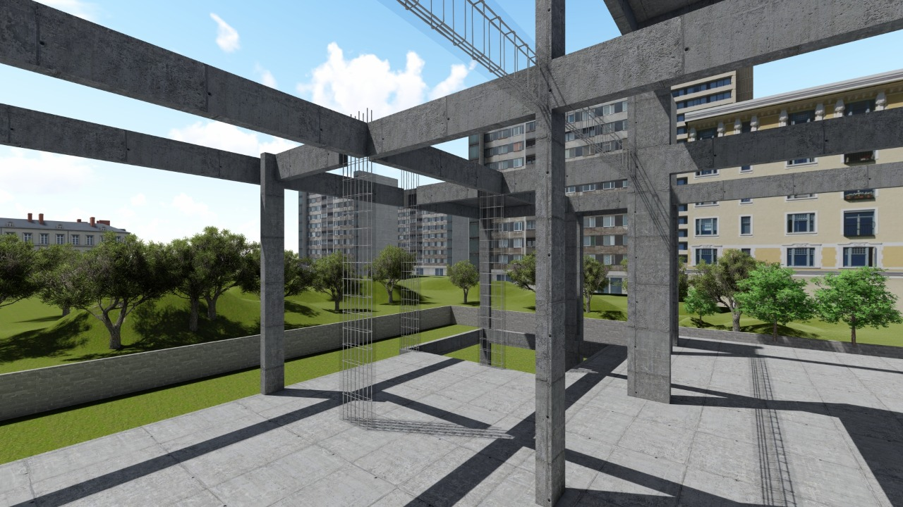
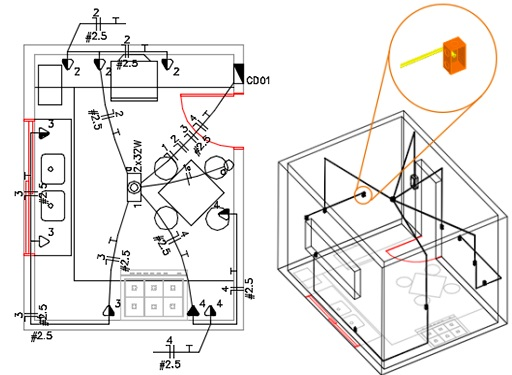
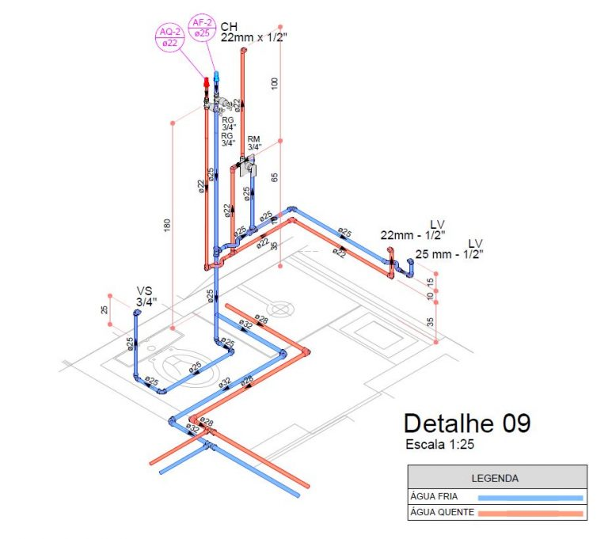
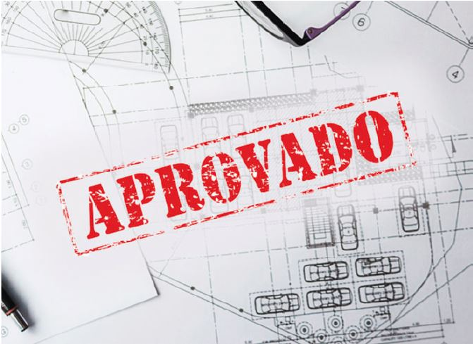

Informação da obra, do terreno e do responsável técnico;
Planta de locação;
Planta baixa (Projeto executivo com cotas);
Planta de cobertura;
Cortes internos;
Fachada e elevações;
Tabela de esquadrias;
Planta humanizada;
Detalhes construtivos;
Detalhes internos e fachadas em 3D;

Projeto Estrutural
O que contêm um projeto estrutural?
Durabilidade da estrutura;
Garantia de segurança;
Previsão para futuras ampliações (reformas) e redução de interferências;
Economia: cálculo do custo e racionalização no uso dos materiais;
Compatibilização com outros projetos;
Escolha e aplicação correta do sistema construtivo;
Tabela de esquadrias;
Otimização da mão de obra;
Parâmetro de qualidade da obra;

Projeto Elétrico
O que contêm um projeto elétrico?
Esquemas de quadros de distribuição com a indicação;
Especificação da posição de tomadas (110V, 220V), interruptores e pontos de
Dimensionamento dos circuitos elétricos de maneira que não atinja as tensões máximas
pré-estabelecidas pela NBR 5410;
Definição dos pontos de telecomunicação, dados, áudios e segurança;
Detalhes de execução;

Projeto Hidráulico
O que contêm um projeto hidráulico?
Definição da posição do hidrômetro, registro e pontos de água fria e quente;
Dimensionamento da tubulação e reservatório de água potável;
Verificação de pressão nos pontos de consumo;
Distribuição da rede sanitária e dimensionamento dos diâmetros e inclinações de acordo com a NBR
8160;
Definição e dimensionamento das caixas de passagem, caixas de gordura, fossas sépticas e
filtros;
Distribuição e dimensionamento da rede pluvial seguindo as diretrizes da NBR 10844 e detalhes
dos pontos de capacitação para evitar infiltrações.

Projeto de Regularização
Por que devo fazer um projeto de regularização?
Quando o imóvel estiver irregular, é de fundamental importância a sua regularização a fim de
legalizar a situação na prefeitura do município em que o mesmo se encontra;
Em uma fiscalização pode ser aplicado uma multa como penalidade em razão da irregularidade do
imóvel;
No caso de um comércio irregular, o mesmo pode ser embargado.